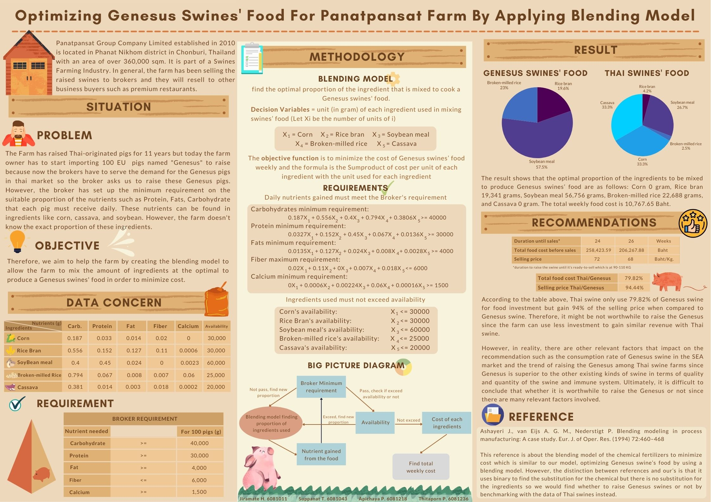

BBA - Business Economics Project
Consumer Behavior Project
Topic: "Mollis Blanket Marketing Strategy"
- Analyzed consumer behavior and proposed the marketing strategy for the Mollis Blanket brand to increase the sales
Strategic Management Project
Topic: "Best Buy Case Study Solution & Strategic Transformation"
- Conducted in-depth analysis: Assessed Best Buy's core competencies, market position, financials, and competitive landscape
- Identified core challenge: Pinpointed Best Buy's post-pandemic struggles and the need to achieve a 10% revenue increase target for 2022
- Developed strategic solution: Proposed digital transformation plan using McKinsey's 4D framework.
- Created implementation roadmap: Mapped the strategy to an OKR framework for execution across departments.
- Provided sales forecasts: Projected best, base, and worst-case scenarios based on the plan.
Management Science Project
Topic: "Optimizing EU swines' food for Panatpansat farm by using blending model"
- Developed a cost-optimization blending model using solver excel, minimizing feed costs for raising EU swine
- Delivered data-driven recommendations to inform strategic decision-making, weighing investment costs against potential revenue.
